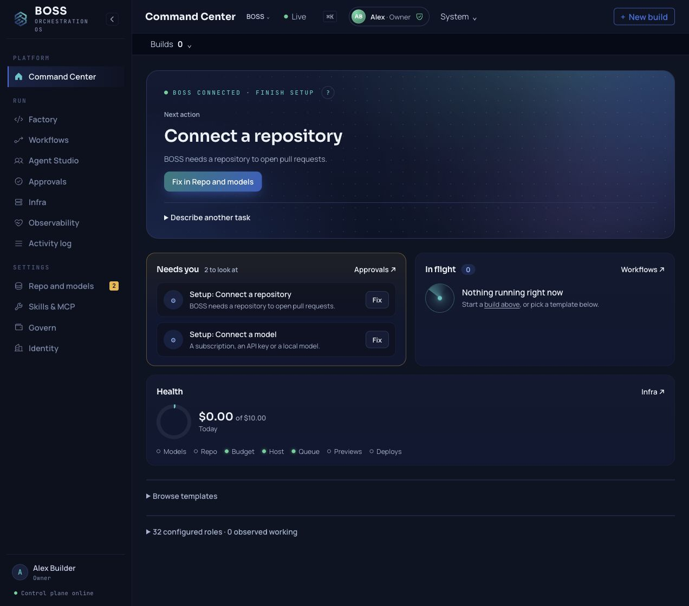

What needs my decision?
Home points to the current record. Approvals holds the decisions required by the selected workflow and policy. Open the scope and evidence before continuing.
Tour the controlsSelf-hosted software work · Community preview
Know what ran, what it cost, what needs your decision, and how to continue safely.

RC8 source is available. Useful live-provider results, independent first use and hosted parity remain qualification work. Read the evidence and limits
One complete path
BOSS keeps the work around the model: the plan, the decisions, the attempts and the evidence. Start with a small correction you can check yourself.
Choose one repository and a bounded task. Name the intended behavior, allowed scope, acceptance checks and spending allowance.
Write the briefFollow the selected workflow and its required decisions. Standard Product Delivery includes a panel and PRD review; its default has no separate Architecture step.
See the current workflowOpen the deliverable in Factory, compare it with your checks and verify the exact revision. A completed job or a created pull request is evidence to review.
Review the resultFor people who own the code
Built for technical founders, independent developers and small engineering operators who can administer a single-tenant server and review their software.
Allow time for setup and model work. Historical CPU-only timings are in the guide; a fast or successful first result is not guaranteed.
Control through visible records
Home points to the current record. Approvals holds the decisions required by the selected workflow and policy. Open the scope and evidence before continuing.
Tour the controlsRead estimated, reserved, observed and reconciled cost separately. Governed spending uses reservations; a reservation is not a hard ceiling on the provider's invoice.
Spending and authorityJobs, receipts and failures retain a trail. A Stop request may leave a submitted call or held budget. Reconcile uncertain external outcomes before retrying.
Handle a hold or failureUse the surface that suits the work
Mission Control, the Metatron terminal and API-backed MCP share the authenticated control plane. Each operation retains its own authority, budget and effect requirements.
Understand the boundariesStart deliberately
RC8 ships source and a checksum. Use Git and an account with repository access if GitHub asks you to sign in. The installer sets up the services on the host you control.
(
set -e
git clone --branch v1.0-rc8 https://github.com/seanventures/boss.git boss-rc8
cd boss-rc8
BOSS_RELEASE_COMMIT="$(git rev-parse HEAD)"
./install.sh --dir "$PWD" --ref "$BOSS_RELEASE_COMMIT"
)Use a fresh boss-rc8 directory. Keep generated credentials and backups private. The Quickstart covers host sizing, Owner enrollment and the next checks. A source release alone does not certify the website installer or your provider's behavior.
Built in the open
Tell us where you stopped, what you checked and whether the result solved the need. Source tests, real provider results and customer usefulness are separate evidence.
Keep credentials and private task data out of public issues. Local Help is available inside the console.